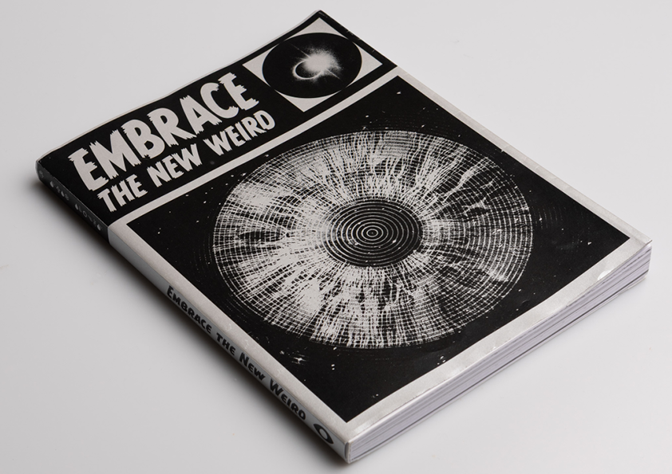
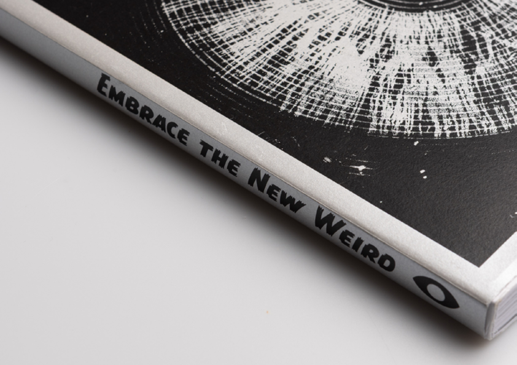
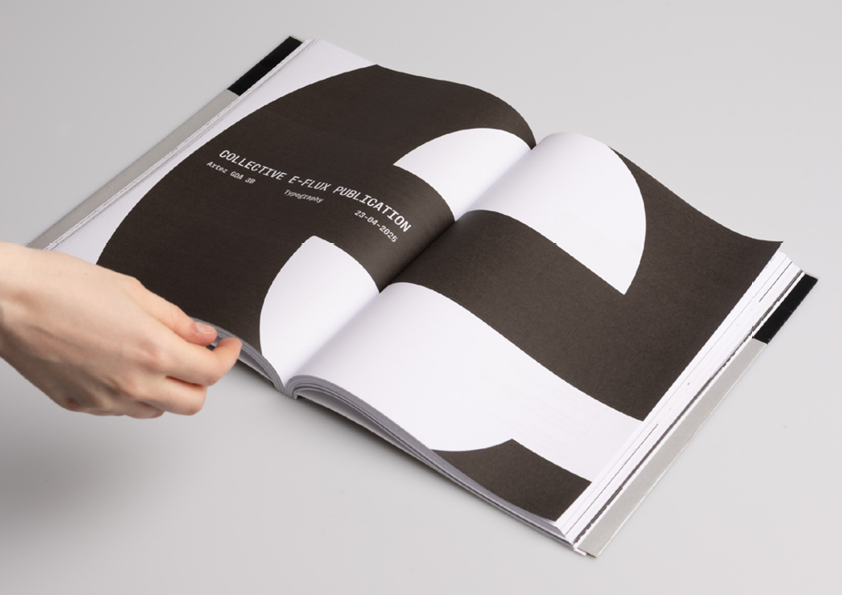
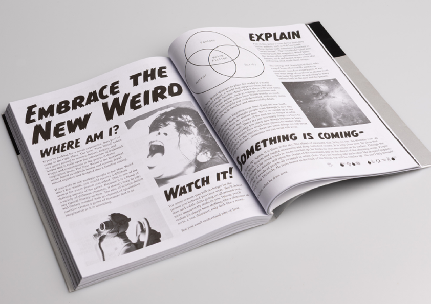
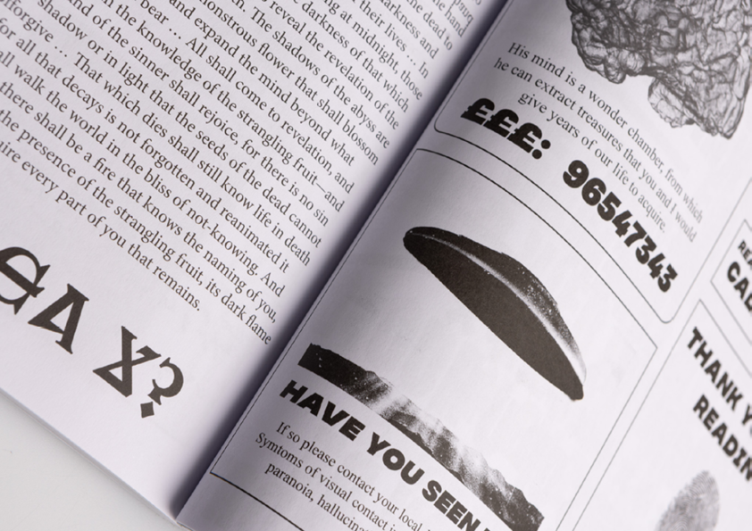

A COLLABORATIVE PUBLICATION PROJECT WHERE WE DESIGNED A PRINTED COLLECTION OF ESSAYS FOR THE E-FLUX ART PUBLISHING PLATFORM. WE ALSO DESIGNED AN EXPERIMENTAL TYPOGRAPHY PUBLICATION BASED AROUND SEVERAL OF THE ESSAYS IN THE ARCHIVE. MY CHOSEN ESSAY WAS: ‘THE WORD MADE FRESH: MYSTICAL ENCOUNTER AND THE NEW WEIRD DIVINE’ BY ELVIA WILK. THE ESSAY WAS HEAVILY INSPIRED BY THE ‘NEW WEIRD’ GENRE, WHICH TAKES FEATURES FROM PULP FANTASY, SCIENCE FICTION AND HORROR TO CREATE SOMETHING COMPLETELY NEW. THE FORMAT AND STYLE OF MY SPREADS WERE INSPIRED BY THE EXPERIMENTAL TYPOGRAPHY FOUND IN NEW WEIRD BOOKS SUCH AS ‘HOUSE OF LEAVES’ ASWELL AS SEVERAL OLDER WEIRD FICTION MAGAZINES SUCH AS ‘WEIRD TALES’. THE FORMAT OF THE SPREADS GRADUALLY GROWS MORE ABRACT, REFLECTING THE SURREALIST NATURE OF THE GENRE.




